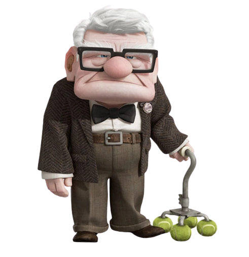
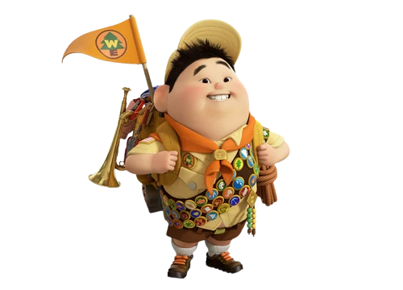
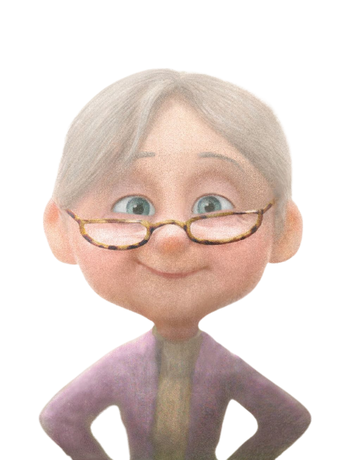
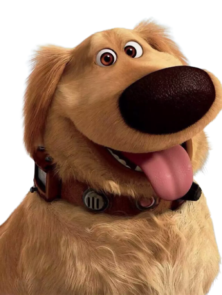
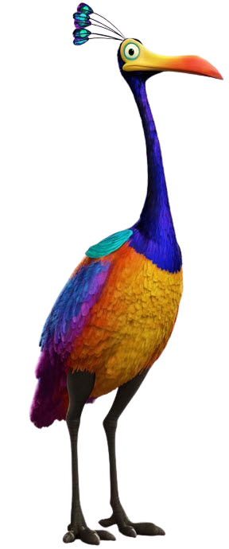

Dublado por Ed Asner, na dublagem original e no Brasil por CHICO ANYSIO
Carl é um idoso de 70 anos, é um vendedor de balões aposentado e viúvo. Ranzinza por causa de sua idade e pelo ambiente desconfortável em que residia, carl decide se aventurar até um lugar que ele e sua esposa sonhavam em morar.

Russel
Dublado por Jordan Nagai, e Eduardo Drummond em pt-br
Russel é um menino d 8 anos, explorador da natureza, seu obrjetivo é conquistar todas as medalhas de seu escotismo, Sua última medalha é de ajudar alguém amis velho, sendo o escolhido para este desafio, o velho Carl

Ellie
Dublado por Elie Docter, e no Brasil foi dublada por Fernanda Ribeiro
Ellie era a esposa de Carl, seu sonho era viajar para Paradise Falls com seu marido

Dug
Dublado por Nizo Neto em pt-br
O Dug é um cachorro que usa uma coleira para conseguir falar, após se perder de seu bando que estava em caça de kevin, encontra a dupla do velho e de uma crainça e decide se juntar a eles.

Kevin
Não possui dubladores
Kevin é um extremamente raro de 4 metros de altura que formou uma amizade com Russel, por ambos terem gostos parecidos.
>
Charles
Dublado por Christopher Plummer, e Jomery Pozolli
Charles era o antigo ídolo do casal de carl e ellie, ele procura provar a existência de uma espécie, de um pássaro de 4 metros, e um de seus servos, o cachorro Dug encontra este tal pássaro, mas também encontra a dupla do Velho Carl e do menino Russel